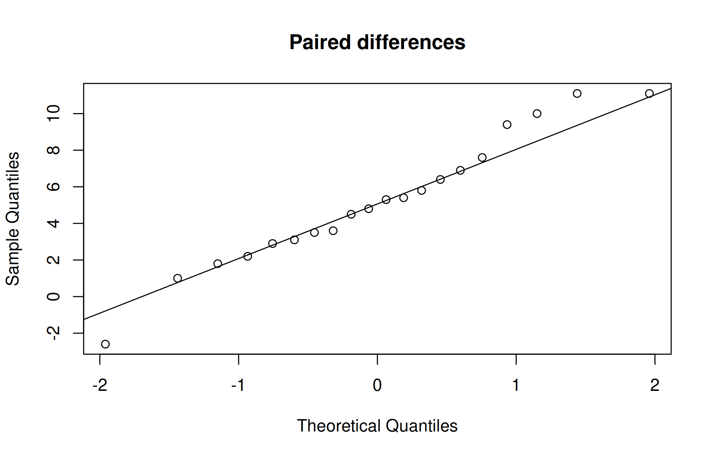

Translate an agricultural question into a null and alternative hypothesis, select an independent or paired t-test, check its assumptions, test proportions and Mendelian ratios, analyze a contingency table, use rank-based alternatives when appropriate, and interpret effect sizes, intervals, and p-values.
11.2 From description to inference
Descriptive statistics summarize observed data. Inference uses a sampling or randomization model to reason about an unobserved population or treatment effect. The experimental unit is the smallest unit independently assigned a treatment. Five leaves measured on each of four treated plants do not create twenty independently treated plants.
A null hypothesis specifies a reference claim, such as zero difference in population means. A test statistic measures discrepancy from that claim relative to sampling variation. A p-value is the probability, under the null model and its assumptions, of a test statistic at least as extreme as the observed one. It is not the probability that the null hypothesis is true, nor the probability that a result will replicate.
Choose the significance level and primary question before inspecting outcomes. Report an estimated effect and an interval alongside the p-value. Statistical significance does not imply agricultural or economic importance. Failure to reject is not proof of equality.
11.3 Worked example: uncertainty in a mean
For independent observations with unknown population variance, a two-sided confidence interval for a population mean is
The critical value comes from a Student t distribution with n - 1 degrees of freedom. It is larger than the normal critical value when the sample is small, reflecting additional uncertainty in estimating the variance.
y <-c(4.2, 4.8, 5.1, 4.5)se <-sd(y) /sqrt(length(y))critical <-qt(.975, df =length(y) -1)c(mean =mean(y), se = se, lower =mean(y) - critical * se,upper =mean(y) + critical * se)
mean se lower upper
4.6500000 0.1936492 4.0337219 5.2662781
The interval is approximately 4.03 to 5.27 t/ha. It estimates a population mean under the sampling assumptions; it is not an interval containing 95% of individual plot yields. Four conveniently selected plots would not justify population inference merely because the formula can be evaluated.
For a two-sample comparison, the same principle estimates a difference and its standard error. Welch’s method estimates variance contributions separately and adjusts the reference degrees of freedom. For a paired comparison, apply the one-sample idea to within-pair differences.
11.4 One-sample and two-sample t-tests
PlantGrowth is a real dataset supplied with R containing dry-weight measurements for a control and two treatment groups. The documentation does not identify the treatments as fertilizer rates, so do not invent that interpretation.
control <-subset(PlantGrowth, group =="ctrl")$weightt.test(control, mu =5)
One Sample t-test
data: control
t = 0.17355, df = 9, p-value = 0.8661
alternative hypothesis: true mean is not equal to 5
95 percent confidence interval:
4.614882 5.449118
sample estimates:
mean of x
5.032
The one-sample example asks whether the population mean control weight differs from 5 in the dataset’s measurement units. The reference value is an illustrative benchmark, not a verified agronomic target.
For two independent groups, Welch’s t-test allows unequal population variances and is R’s default. Define the contrast order explicitly so the sign of the estimate is unambiguous.
treated <-subset(PlantGrowth, group =="trt2")$weightwelch <-t.test(treated, control, alternative ="two.sided")welch
Welch Two Sample t-test
data: treated and control
t = 2.134, df = 16.786, p-value = 0.0479
alternative hypothesis: true difference in means is not equal to 0
95 percent confidence interval:
0.00512787 0.98287213
sample estimates:
mean of x mean of y
5.526 5.032
The t-test assumes independent observations and appropriate conditions for inference on the mean. With small samples, inspect strong skewness and outliers; normality of model errors matters more than the appearance of a pooled distribution. Welch’s test relaxes equal variance, not independence. Do not choose a one-sided alternative after seeing the sign of the difference.
11.5 Paired observations
A paired design compares linked observations, such as before-and-after measurements on the same plots. The analysis uses within-pair differences. It differs from treating the two measurements as unrelated groups.
paired <-read.csv("data/paired_soil.csv")stopifnot(!anyDuplicated(paired$plot_id), complete.cases(paired))paired$change <- paired$after_mg_kg - paired$before_mg_kghist(paired$change, xlab ="Change in available N (mg/kg)", main ="Within-plot changes")
Paired t-test
data: paired$after_mg_kg and paired$before_mg_kg
t = 6.5908, df = 19, p-value = 2.62e-06
alternative hypothesis: true mean difference is not equal to 0
95 percent confidence interval:
3.541818 6.838182
sample estimates:
mean difference
5.19
Pairs must be correctly matched; the differences should be independent across pairs. Normality is assessed for differences, not separately for before and after values. Without an untreated comparison, a before–after increase may reflect time or seasonal effects as well as management.
11.6 Chi-square tests for pest observations
A contingency table cross-classifies counts. In the simulated pest dataset, each independently treated plot contributes one yes/no infestation status at a specified assessment date. The table is not composed of repeated observations of the same insects.
pest <-read.csv("data/pest.csv")tab <-with(pest, table(treatment, infested))tab
infested
treatment No Yes
Control 20 40
IPM 46 14
proportions(tab, margin =1)
infested
treatment No Yes
Control 0.3333333 0.6666667
IPM 0.7666667 0.2333333
The null hypothesis is independence between treatment and infestation status. Expected counts are calculated under independence, not taken from observed counts. The chi-square approximation needs adequate expected frequencies and independent units. For sparse 2-by-2 tables, Fisher’s exact test is often suitable; it does not fix dependence or poor sampling.
fisher.test(tab)
Fisher's Exact Test for Count Data
data: tab
p-value = 3.183e-06
alternative hypothesis: true odds ratio is not equal to 1
95 percent confidence interval:
0.06268524 0.36395035
sample estimates:
odds ratio
0.1549382
Report infestation proportions and their contrast, not only a test result. Because this example is simulated, no real pest-control efficacy claim follows. In a clustered field survey, observations from the same field may require a model that accounts for clustering.
11.7 What Welch’s test calculates
Suppose two independent groups have sample means \(\bar{x}_1\) and \(\bar{x}_2\), sample variances \(s_1^2\) and \(s_2^2\), and sizes \(n_1\) and \(n_2\). Under a null difference of zero, Welch’s statistic is
The numerator is the estimated effect. The denominator is its estimated standard error. A difference can therefore produce a larger absolute t-statistic when within-group variation is lower or sample sizes are larger. This does not make the underlying biological difference larger; it changes its precision relative to noise.
The degrees of freedom need not be an integer. They account approximately for uncertainty in the two variance estimates. In contrast, the pooled-variance t-test assumes a common population variance and estimates it using both groups. Choose the method from the design and assumptions rather than selecting whichever one gives a smaller p-value.
11.8 Reading a contingency table cell by cell
Under independence, a contingency table’s expected count is its row total multiplied by its column total and divided by the grand total. For example, if there are 60 control plots and 50 infested plots among 120 plots overall, independence predicts 60 * 50 / 120 = 25 infested control plots. The observed number need not be 25; the difference contributes to the test statistic.
Squaring prevents positive and negative discrepancies from cancelling. Dividing by the expected count scales discrepancies relative to their expected magnitude. In a two-by-two table the independence test has one degree of freedom. In a general r-by-c table it has (r - 1)(c - 1) degrees of freedom when the usual assumptions apply.
A test of association does not by itself give the direction or size of an efficacy effect. Inspect row proportions and define a contrast such as risk difference or risk ratio. If treatments were randomized to independent plots, the contrast can support a treatment interpretation within the experiment’s scope. If farmers chose their treatments, management and pest risk may already differ before treatment.
11.9 Checking assumptions for t-tests
The t-tests above assume approximately normal observations (or differences, for paired data), and the pooled-variance test also assumes equal variances. Plots come first: a histogram, box plot, or normal quantile plot shows the shape of the data. Formal tests can supplement them.
qqnorm(paired$change, main ="Paired differences")qqline(paired$change)

shapiro.test(paired$change)
Shapiro-Wilk normality test
data: paired$change
W = 0.97114, p-value = 0.7788
var.test(treated, control)
F test to compare two variances
data: treated and control
F = 0.5761, num df = 9, denom df = 9, p-value = 0.4239
alternative hypothesis: true ratio of variances is not equal to 1
95 percent confidence interval:
0.1430949 2.3193713
sample estimates:
ratio of variances
0.576099
shapiro.test() tests the null hypothesis that the data come from a normal distribution. var.test() is the F-test for equality of two variances; its statistic is the ratio of the first sample variance to the second. Interpret both with care. With small samples, these tests have little power, so a non-significant result does not prove normality or equal variances. With large samples, they detect departures too small to matter. The t-test is fairly robust to moderate non-normality when the groups are of similar size. Use the tests as one piece of evidence, together with the plots and knowledge of how the data arise; counts and percentages, for example, are rarely normal.
11.10 Tests for proportions
Many agricultural outcomes are proportions: germination, infestation, survival, or adoption of a practice. For a sample of \(n\) independent units of which \(x\) show the outcome, prop.test() tests a hypothesized proportion and gives a confidence interval, and binom.test() gives the exact binomial version.
Suppose 400 seeds are drawn from a seed lot and 332 germinate. Is the germination rate consistent with a stated standard of 80%?
prop.test(x =332, n =400, p =0.80)
1-sample proportions test with continuity correction
data: 332 out of 400, null probability 0.8
X-squared = 2.0664, df = 1, p-value = 0.1506
alternative hypothesis: true p is not equal to 0.8
95 percent confidence interval:
0.7887474 0.8647631
sample estimates:
p
0.83
binom.test(x =332, n =400, p =0.80)
Exact binomial test
data: 332 and 400
number of successes = 332, number of trials = 400, p-value = 0.1503
alternative hypothesis: true probability of success is not equal to 0.8
95 percent confidence interval:
0.7895289 0.8655028
sample estimates:
probability of success
0.83
The sample germination is 83%, and the 95% confidence interval for the lot’s germination rate lies roughly between 79% and 86%. It includes 80%, so the data do not show that the lot differs from the standard. If the decision rule requires evidence that the lot exceeds the standard, that one-sided question must be stated before testing, with alternative = "greater".
prop.test() also compares proportions between groups. For two groups it is equivalent to the chi-square test of the 2 × 2 table, and it reports the two proportions and a confidence interval for their difference.
2-sample test for equality of proportions without continuity correction
data: infested out of plots
X-squared = 22.761, df = 1, p-value = 1.835e-06
alternative hypothesis: two.sided
95 percent confidence interval:
0.2730808 0.5935858
sample estimates:
prop 1 prop 2
0.6666667 0.2333333
These methods assume that the units are independent. Seeds in the same tray or plants in the same plot are not independent of each other: tray or plot effects make the outcomes cluster. When the experimental unit is the tray, analyse tray-level percentages, as in the transformation example of Chapter 13.
11.11 Goodness of fit: testing Mendelian ratios
A chi-square goodness-of-fit test compares observed counts in categories with the counts expected under a hypothesized ratio. Genetics provides the classic agricultural example. In his experiments with peas, Gregor Mendel crossed plants differing in seed shape and colour and recorded 315 round yellow, 108 round green, 101 wrinkled yellow, and 32 wrinkled green seeds in the second generation. Independent assortment of two genes predicts a 9:3:3:1 ratio.
Expected counts are the total, 556, multiplied by 9/16, 3/16, 3/16, and 1/16. The chi-square statistic is small, about 0.47 on 3 degrees of freedom, and the p-value is large. The data are consistent with a 9:3:3:1 ratio. As always, this does not prove the ratio; it shows that the observed deviations are of the size expected from chance.
For a single gene with complete dominance, an F2 generation should segregate 3:1. Mendel’s stem-length cross gave 787 tall and 277 dwarf plants.
chisq.test(c(tall =787, dwarf =277), p =c(3, 1) /4)
Chi-squared test for given probabilities
data: c(tall = 787, dwarf = 277)
X-squared = 0.60652, df = 1, p-value = 0.4361
The degrees of freedom are the number of categories minus one. If any parameters of the expected distribution are estimated from the data, one further degree of freedom is lost for each. The approximation is reliable when every expected count is at least about 5.
11.12 When assumptions fail: rank-based tests
When data are clearly non-normal and a transformation is not appropriate, or when the measurements are ranks or scores, rank-based (non-parametric) tests are an alternative. They replace observations by their ranks and so are less affected by skewness and outliers.
Table 11.1: Rank-based alternatives to common tests
Design
Parametric test
Rank-based alternative
Two independent groups
t.test()
wilcox.test() (Wilcoxon rank-sum / Mann–Whitney)
Paired observations
t.test(paired = TRUE)
wilcox.test(paired = TRUE) (Wilcoxon signed-rank)
Three or more independent groups
one-way ANOVA
kruskal.test() (Kruskal–Wallis)
wilcox.test(treated, control, exact =FALSE)
Wilcoxon rank sum test with continuity correction
data: treated and control
W = 75, p-value = 0.06402
alternative hypothesis: true location shift is not equal to 0
Wilcoxon signed rank test with continuity correction
data: paired$after_mg_kg and paired$before_mg_kg
V = 206, p-value = 0.0001752
alternative hypothesis: true location shift is not equal to 0
aphid <-read.csv("data/aphid_counts.csv")kruskal.test(aphids_per_plant ~ treatment, data = aphid)
Kruskal-Wallis rank sum test
data: aphids_per_plant by treatment
Kruskal-Wallis chi-squared = 19.973, df = 4, p-value = 0.0005056
exact = FALSE asks for the normal approximation, which is needed when the data contain tied values. The Kruskal–Wallis test on the aphid counts asks whether the treatments differ in the distribution of counts; it is a useful check on the transformed ANOVA in Chapter 13. Rank tests do not estimate a difference in means, and they still assume independent units. They are not a remedy for poor design.
11.13 Choosing a test
The choice of test follows from the question, the type of response, and the design, not from which test gives the smallest p-value.
A Type I error rejects a true null hypothesis. The chosen significance level controls its probability under the stated test model. A Type II error fails to reject a false null. Power is the probability of rejecting the null for a specified alternative effect and design. Power is therefore not one fixed characteristic of a test: it depends on the effect size, variability, sample size, and significance level.
When planning a trial, specify the smallest difference that would matter scientifically or economically and use a defensible estimate of variation. A pilot trial can inform that estimate, but its uncertainty should be acknowledged. The following planning calculation asks for the approximate sample size per group needed to detect a difference of 0.5 t/ha when the within-group SD is 0.6 t/ha, using a two-sided two-sample test at level 0.05 and power 0.80.
planning <-power.t.test(delta = .5, sd = .6, sig.level = .05,power = .80, type ="two.sample", alternative ="two.sided")planning
Two-sample t test power calculation
n = 23.60472
delta = 0.5
sd = 0.6
sig.level = 0.05
power = 0.8
alternative = two.sided
NOTE: n is number in *each* group
ceiling(planning$n)
[1] 24
This is a simple equal-size independent-group planning example. Blocking, clustering, repeated measurements, unequal allocation, and expected missingness require additional design considerations. Do not use a planning result to justify treating subsamples as independent units. Also, calculating “observed power” from the same estimated effect and p-value after a test adds little information; report the effect and interval instead.
11.15 Confidence intervals and decisions
A 95% confidence procedure has 95% coverage under repeated sampling when its assumptions hold. A particular computed interval is not a 95% probability statement about a fixed parameter in frequentist inference. Wide intervals indicate that both small and large effects may be compatible with the data. Equivalence requires a prespecified margin and an appropriate equivalence analysis; a nonsignificant t-test is insufficient.
If many outcomes or comparisons are tested, false positives become more likely. Prespecify primary comparisons, distinguish exploratory results, and use an appropriate multiplicity method when needed. The next chapter introduces Tukey comparisons after ANOVA.
11.16 Practicals 11–12 and exercises
Interpret the trt2 - ctrl estimate and its interval in words without claiming a fertilizer response.
Compare paired and unpaired tests on the soil example. Explain which matches the design.
Calculate the infestation proportion in each treatment. State the observational unit and examine expected counts.
A test returns p = 0.08. Explain why “there is no effect” is too strong.
Distinguish random sampling, random treatment assignment, and repeated subsampling.
A sample of 250 seeds gives 212 germinated. Estimate the germination rate with a 95% confidence interval and compare it with a standard of 85%.
An F2 population segregates 152 purple and 48 white flowers. Test the fit to a 3:1 ratio and interpret the result.
Compare the aphid counts of the five treatments with kruskal.test(), and explain how this differs from an ANOVA on square-root counts.
For three questions from your own field of interest, use the test-selection table to choose a method and justify it.
Chapter review. Valid inference begins with design. State the contrast, quantify its size and uncertainty, and interpret the p-value conditionally on the model.
11.17 Live R laboratory
Estimate a mean difference with uncertainty
Edit the code, then select Run R. The first run downloads R into your browser and may take a little time. Copy code also lets you use this example in RStudio.
Investigate. For this simulated independent-group example, identify the estimated difference, confidence interval, and null hypothesis. A small p-value alone does not measure the practical value of a treatment.
From the browser to your practical notebook
Record the input you changed, the output you obtained, and your interpretation. These live examples use base R and work independently. The full chapter examples, including package-based analyses, remain available with copy buttons for RStudio. Browser objects last until this page is reloaded; Reset code restores the editor text. Internet access is needed on first use; long or interactive desktop tasks belong in RStudio.
Historical Insights
William Sealy Gosset, a chemist at the Guinness brewery in Dublin, published the t distribution in 1908 under the pen name Student. Karl Pearson introduced the chi-square goodness-of-fit test in 1900.
11.18 Chapter Summary
Fill in the blanks
Answers are given at the end of the chapter.
The hypothesis of no difference is the __________ hypothesis.
Rejecting a true null hypothesis is a Type __________ error.
The probability of rejecting a false null hypothesis is the __________ of the test.
When the same units are measured twice, a __________ t-test is used.
Welch’s test does not assume equal __________.
The goodness of fit of a Mendelian ratio is tested with the __________ test.
A rank-based alternative to the two-sample t-test is the Wilcoxon __________ test.
A 95% confidence interval that excludes zero corresponds to $p < $ __________.
Short-answer questions
Define the p-value.
Distinguish between paired and independent samples with an example.
What are the assumptions of the two-sample t-test?
Explain Type I and Type II errors.
Why should a confidence interval be reported along with a p-value?
Numerical and conceptual questions
Answers are given at the end of the chapter.
A sample of 16 plants has mean height 52 cm and SD 8 cm. Test \(H_0: \mu = 50\) cm.
In an F2, 290 tall and 110 dwarf plants are observed. Test a 3:1 ratio.
Fifteen paired differences have mean 2.62 and SD 4.72. Find the paired t statistic.
Important formulae
One-sample t statistic:
\[
t = \frac{\bar x - \mu_0}{s/\sqrt n}
\tag{11.1}\]